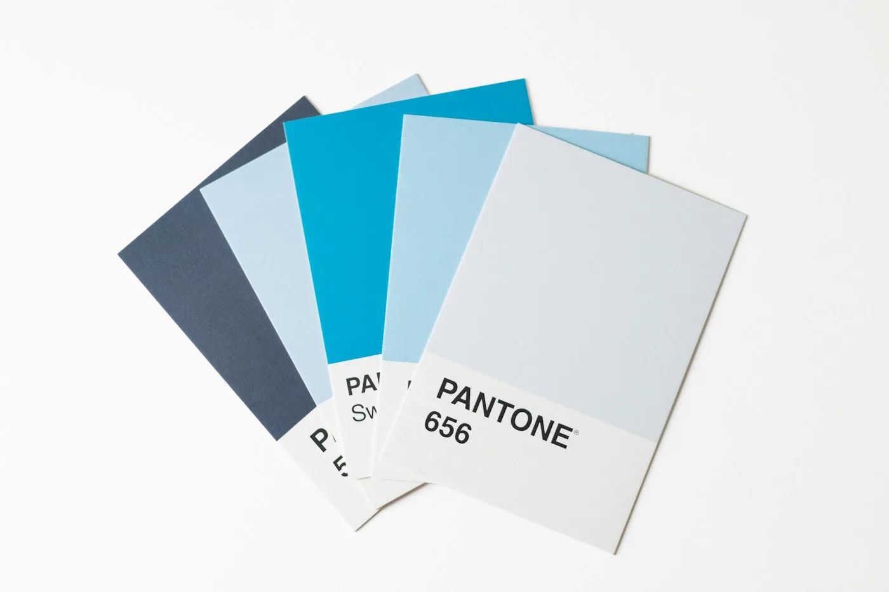

Branding
Cum să-ți dai seama că brandul are nevoie de rebranding, nu de cosmetică

Clienții formulează aproape mereu sarcina la fel: „logo-ul e învechit, actualizați-l”. Dar în spatele acestei fraze se ascunde adesea o problemă cu totul alta — nu logo-ul și-a pierdut actualitatea, ci sistemul de identitate în sine nu a fost niciodată construit ca un sistem.
Există trei semne că e nevoie de un rebranding complet, nu de o corectură cosmetică. Primul — brandul nu are o logică unitară de culoare și tipografie: fiecare machetă a fost făcută separat, „din ochi”. Al doilea — logo-ul nu se scalează: pe o carte de vizită se citește, pe un banner se transformă într-un terci. Al treilea — angajații înșiși nu pot explica ce diferențiază brandul de concurenți, în afară de culoare.
Dacă se potrivește măcar unul dintre aceste puncte, o corectură cosmetică a logo-ului nu rezolvă problema — peste jumătate de an vă veți întoarce la aceeași întrebare. La lucrul asupra KARION am început exact de aici: nu de la forma semnului, ci de la ce sarcină trebuie să rezolve semnul într-un business de interioare, unde decizia se ia „la atingere și din ochi”.
Dacă însă logo-ul e pur și simplu învechit vizual, iar structura funcționează — aici chiar se poate rezolva printr-o actualizare a formei și paletei fără reconstruirea întregului sistem. Diferența la start nu e mereu evidentă pentru client, dar exact de aici merită început orice discuție despre rebranding.
Din portofoliu